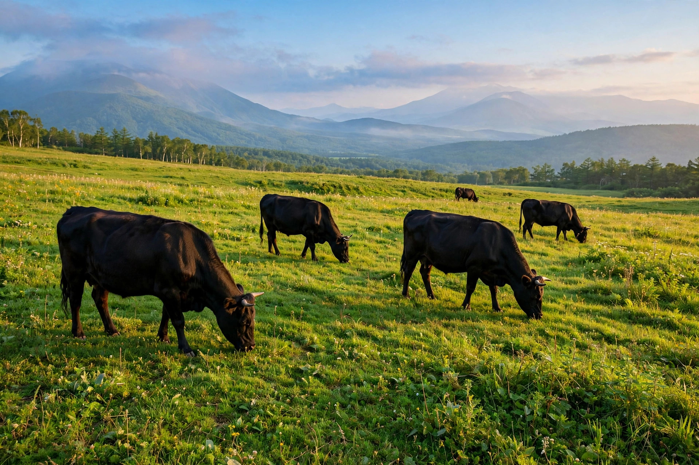
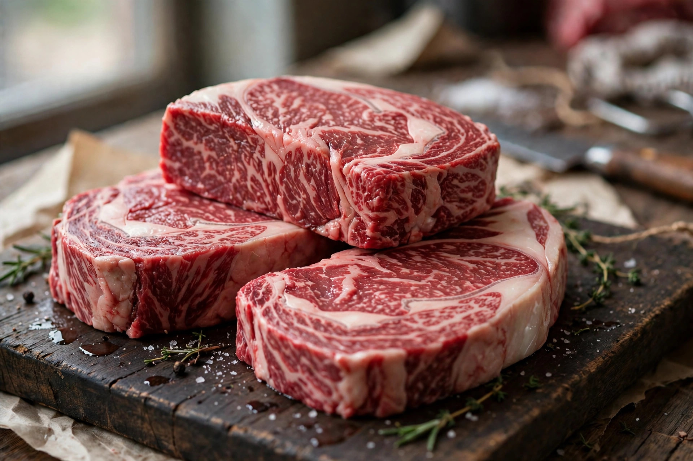

Shiraoi Wagyu — Iwasaki Farm
繁殖から育成・肥育まで、自社牧場で一貫して育てた白老牛を、炭火焼レストランと精肉直売でお届けする専門店です。
About
白老牛は、北海道白老町で育てられるブランド和牛です。いわさきは町内に自社牧場を持ち、繁殖から育成・肥育までを一貫して手がけています。
育てる現場と、提供する現場がひとつながり。白老牛の指定販売店として、レストラン「おもてなし亭」と精肉・加工品の直売所で、自社生産の白老牛をお届けします。

Charcoal Grill
炭火焼肉・すき焼き・しゃぶしゃぶを味わえるレストラン「おもてなし亭」。収容人数80名、国道36号沿いの立地です。
Butcher & Deli
併設の直売所では白老牛の精肉と加工品を販売。ご家庭用から贈答用まで対応します。
Gift & Delivery
遠方の方へも白老牛を。ギフトや地方発送にも対応しています。
Restaurant
看板は、脂の甘みと柔らかさが際立つサーロインステーキ。炭火で焼く焼肉、鍋を囲むすき焼き・しゃぶしゃぶまで、白老牛の部位ごとの味わいを楽しめます。
天気の良い日はガーデン席も利用可能。白老駅から車で5分、ドライブの食事処としても立ち寄りやすい一軒です。
Charcoal
炭火で香ばしく焼き上げる、牧場直営の焼肉
Sukiyaki
割り下とともに味わう、白老牛の甘み
Shabu-Shabu
薄切り肉を出汁にくぐらせて、さっぱりと
Steak
看板のサーロインステーキ
Butcher
レストランに併設の直売所では、白老牛の精肉と加工品を販売しています。自宅での焼肉やすき焼き用に、また贈答用のギフトにも。
地方発送にも対応しているので、道外の方への贈り物にもご利用いただけます。

Information